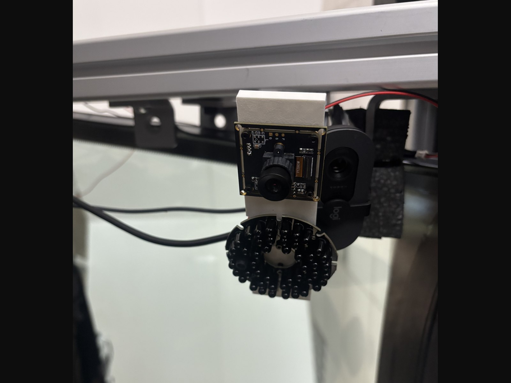
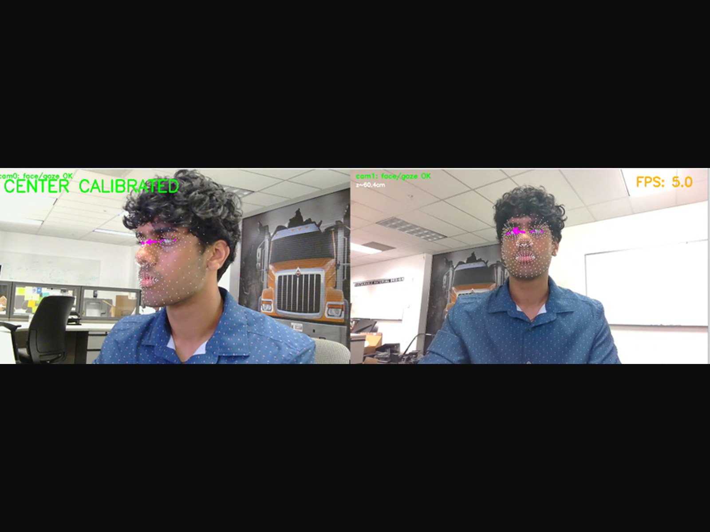
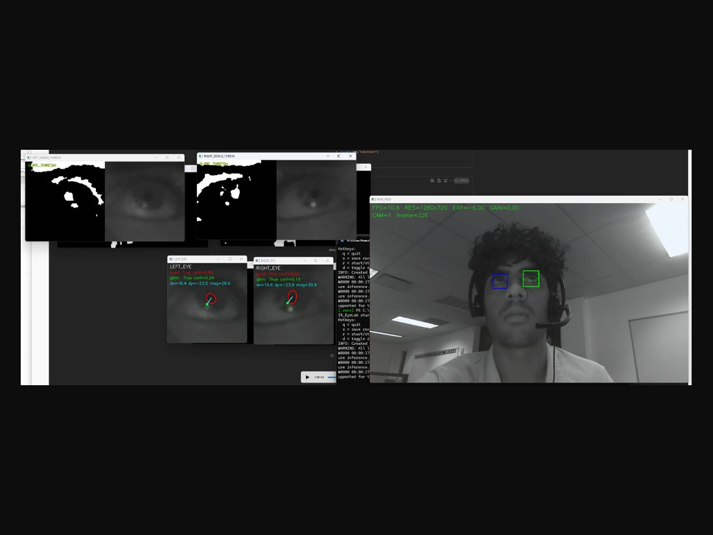
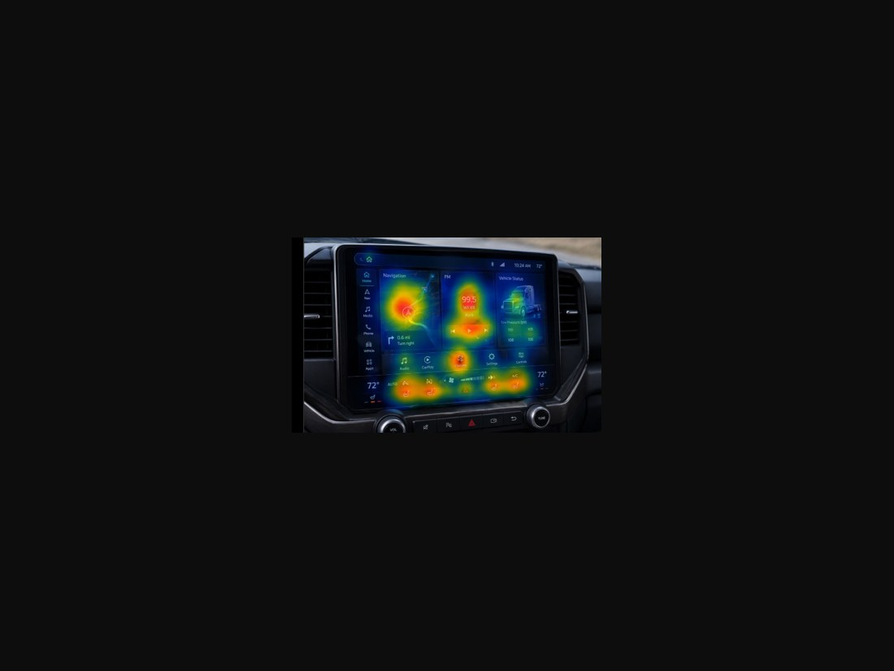
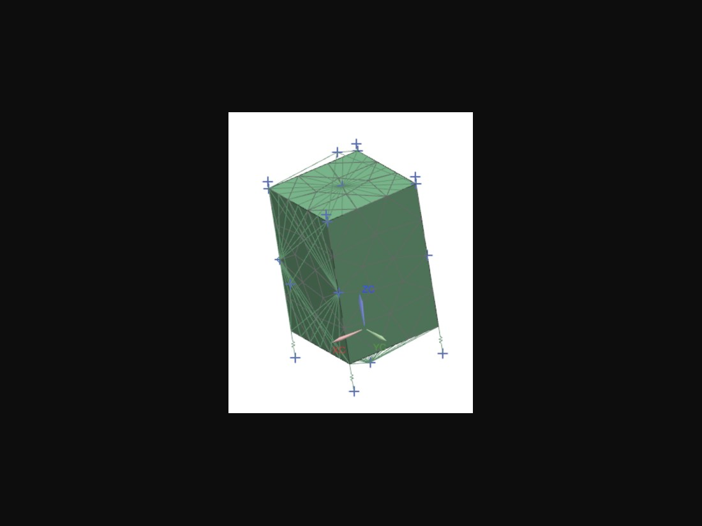
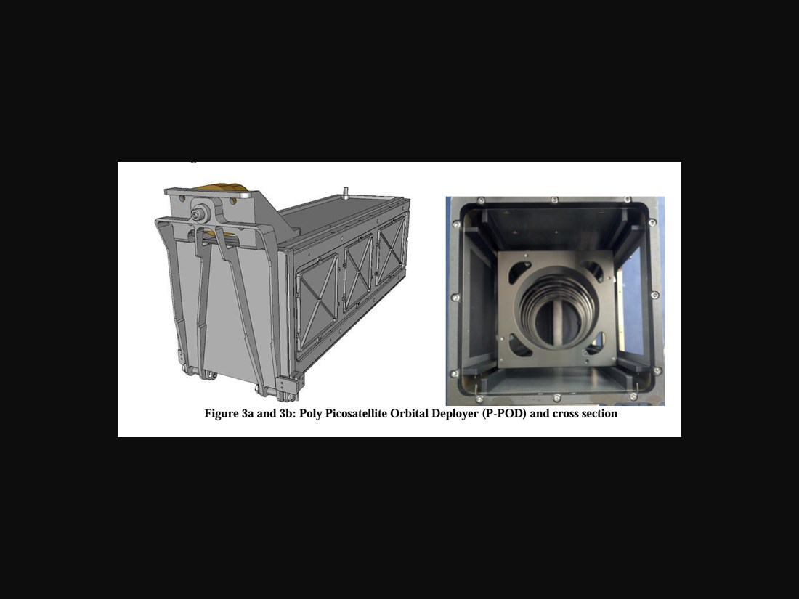

Mechanical Engineer / Hardware Builder
Sai Sanjay Bommisetty
Junior ME at UIUC building real hardware from scratch — biometric sensing systems, pneumatic actuation, precision robotics, and CubeSat structural and thermal analysis. I work across mechanical design, embedded electronics, and the software that ties them together. I'm also in Class XXXII of the Hoeft Technology & Management Program, a competitive joint minor with Gies College of Business.
Scroll
Experience
Where I've
built things.
LASSI — UIUC
Undergraduate Structures/Thermal Researcher — Champaign, IL
- Conduct structural FEA on the MonARCH 12U CubeSat deployer interface in Siemens NX, modeling rail contact with CBUSH spring elements, CGAP contact elements, and RBE3 multi-point constraints to replace boundary conditions that did not physically represent satellite–deployer contact
- Established updated CBUSH stiffness values — 75 N/mm lateral, 100,000 N/mm axial — producing a more realistic stress distribution across the rail interface under launch loads
- Convert CAD geometry into Thermal Desktop models to evaluate temperature gradients and heat flux across satellite subsystems during orbital cycles, supporting systems engineering under SWaP and radiation constraints
International Motors
Human Factors & Mechanical Design Intern — Lisle, IL
- Developed a computer-vision gaze tracking system achieving 2° accuracy via PCCR and stereo triangulation across synchronized multi-camera capture, mapping gaze onto a Unity-reconstructed 3D cab environment at 20 FPS
- Designed custom enclosures and hardware housings in Siemens NX, applying GD&T to 3D-printed components with 6-DOF adjustable mounts and integrated cable routing to meet simulator packaging constraints
- Supported Experience Design and Clay Studio by selecting materials and planning layouts in Figma, enabling concept sleeper-cab and interior mockups approved for downstream prototyping
- Analyzed human factors data from 30 participants across workshops and clinic studies, synthesizing findings into thematic groupings and design concepts
Northrop Grumman Innovation Lab
Research & Development Intern — Baltimore, MD
- Designed and prototyped 3D CAD hardware housings in SolidWorks integrating a Raspberry Pi, sensors, and bone-conduction transducers; validated electromechanical integration and sensor reliability through iterative build cycles
- Led a 4-person team developing a wearable hardware system combining AR optics, custom PCB electronics, and sensor-fusion algorithms; owned end-to-end mechanical design, rapid prototyping, and physical validation testing
Leadership
Teams I've
run.
American Society of Mechanical Engineers
Carle-CIMED Product Development Team Lead — Champaign, IL
- Led a 15-person team building VidaCloud, a smart mattress topper with embedded pressure sensor arrays and pneumatic actuation for pressure ulcer prevention
- Drove product development from concept through prototype validation, building the data-collection stack with Arduino IDE and custom PCB design
International Consulting Network (ICON)
Project Manager & Membership Director — PIMIC AI, Fassforward, HTS Europe, MODO
- Led engagements across 4 international clients in AI, hardware, and manufacturing; conducted market research and go-to-market analysis and presented findings to stakeholders across multiple countries
- Lead membership recruitment and onboarding to grow the consultant pipeline
Education
What I've
studied.
University of Illinois Urbana-Champaign
Mechanical Sciences & Engineering, Grainger College of Engineering — GPA 3.9 / 4.0
- Coursework spans mechanical design and manufacturing, solid mechanics and dynamics, thermal and fluid systems, nanosatellite design, and circuits — broken down by area in the section below
- Awards: 1st Place (2026) and 2nd Place (2025) Engineering Industry Impact Award · 1st Place Distinguished Tech Award · Engineering Visionary Scholarship · Dean's List
Hoeft Technology & Management Program
Joint minor — Grainger College of Engineering & Gies College of Business
- Cohort-based minor admitting roughly 60 students a year across engineering and business; admission is competitive and applications are reviewed by program staff, academic directors, current students, and program alumni
- Curriculum layers product development, innovation management, and global business onto the engineering degree, with engineering and business students taking the coursework together in mixed teams
- Capstone puts multidisciplinary teams on a real technical and managerial problem posed by a corporate affiliate; affiliates include Abbott, Boeing, Caterpillar, and Synchrony
- Includes international immersion experiences and professional development in negotiation, leadership, and cross-functional communication
Coursework
What I've
been taught.
Design & Manufacturing
How a part goes from an idea to something that can actually be built
- ME 370Mechanical Design I Designing machine elements to survive real loading — failure theories, fatigue life, and the sizing of shafts, fasteners, springs, and bearings. This is where stress analysis stops being an exercise and becomes a design decision.
- ME 270Design for Manufacturability Matching geometry to process — casting, machining, injection molding, sheet metal — and understanding tolerance stack-up. Why a part that models cleanly can still be expensive or impossible to produce.
- ME 170Computer-Aided Design Parametric solid modeling, assembly constraints, and engineering drawings. The foundation under the NX and SolidWorks work in my projects.
- ENG 177Spatial Visualization Reading and sketching three-dimensional geometry from orthographic views and rotating parts mentally. Unglamorous, and it makes every CAD task afterward faster.
Mechanics & Materials
How structures carry load, how they move, and how they fail
- TAM 251Introductory Solid Mechanics Stress and strain under axial load, torsion, and bending; beam deflection, buckling, and Mohr's circle for combined states. The direct groundwork for the CubeSat interface FEA.
- TAM 212Introductory Dynamics Kinematics and kinetics of particles and rigid bodies — work-energy methods, impulse and momentum, rotation about a fixed axis.
- TAM 210Introduction to Statics Force and moment equilibrium, trusses and frames, friction, centroids, and distributed loads. Everything structural rests on this.
- ME 340Dynamics of Mechanical Systems Modeling mechanical systems as differential equations — free and forced vibration, damping, resonance, and the transfer function view that leads into control.
- ME 330Engineering Materials Why materials behave the way they do — crystal structure, phase diagrams, heat treatment, and the failure mechanisms behind fatigue, creep, and fracture. The basis for selecting a material rather than defaulting to one.
Thermal & Fluids
Energy transfer and flow — the physics behind the thermal modeling work
- ME 200Thermodynamics First and second laws, property relations, entropy, and power and refrigeration cycles. What lets a heat balance on a satellite subsystem mean something.
- ME 310Fundamentals of Fluid Dynamics Continuity, momentum, and energy for fluid flow — Bernoulli, viscous and boundary-layer behavior, and dimensional analysis. Also where the continuum assumption gets defined, which is exactly what stops holding in the VLEO work.
Space Systems
Small satellite design, taken twice as coursework and once as a build
- AE 298Introduction to Nanosatellite Design CubeSat form factors, subsystem architecture — power, ADCS, comms, structures, thermal — and how mission requirements flow down into hardware constraints.
- ENG 491Nanosatellite Design Build I The hands-on counterpart: working on a real satellite build within a student team rather than analyzing one on paper.
- ENG 491CubeSat I Continuation of the build sequence, running alongside my structures and thermal work at LASSI.
Electronics & Computing
The electrical and software half of every project on this site
- ECE 205Electrical & Electronic Circuits Circuit analysis, transient and steady-state AC response, operational amplifiers, and semiconductor devices. What made the VidaCloud solenoid driver circuit something I could design rather than copy.
- ECE 206Electrical & Electronics Lab Building and measuring the circuits from ECE 205 — instrumentation, probing, and finding out where theory and a breadboard disagree.
- CS 101Intro Computing for Engineering & Science Programming fundamentals aimed at numerical and engineering problems — the starting point for the Python and OpenCV work in the gaze tracking pipeline.
Technology & Management
Coursework from the Hoeft T&M minor
- TMGT 367Management of Innovation and Technology How organizations develop and commercialize technology — innovation strategy, technology adoption, and the structures that decide whether a good idea ships.
- BADM 365New Product Marketing Taking a product from concept to market — customer research, positioning, and launch planning. The counterweight to designing something without asking who it's for.
Foundation: Calculus II and III, Differential Equations, University Physics (Mechanics and Electricity & Magnetism), General Chemistry I and II with labs.
Projects
Hardware I've
shipped.
VidaCloud — Smart Pressure Ulcer Prevention System
ASME Carle-CIMED Product Development Team · Team Lead · Sep 2024 – Apr 2026

The problem. Pressure ulcers form when a patient stays in one position long enough for sustained contact pressure to cut off blood flow to the tissue underneath. They affect over 2.5 million U.S. patients annually, and the standard prevention protocol is manual: nursing staff physically reposition patients on a fixed schedule, whether or not that particular patient needs it at that moment.
What we built. A mattress topper that closes that loop automatically. An embedded pressure sensor array maps contact pressure across the patient's body in real time. Where readings stay elevated past a threshold, a pneumatic actuation system inflates and deflates bladders beneath that region to shift load off the affected tissue — repositioning continuously and in small increments rather than in scheduled bulk movements.
My role. I led the team, and my own hands-on work was the pneumatics. I researched and selected the foam cores, placed them, and routed the air channels through the topper, then worked through combinations of channel geometry, pumps, and valve types to find something that held pressure without constant retuning. What worked was a one-way valve paired with a release valve feeding the air valves — a configuration robust enough to need almost no adjustment once set. From there I built the wiring schematic and picked the components to drive it: nine solenoid one-way valves switched through TIP102 NPN Darlington transistors, plus the DC pumps supplying air.
Where it landed. The pneumatic repositioning system is projected to reduce nurse repositioning workload by roughly 30%. The project took 2nd Place in the Engineering Industry Impact Award in 2025, returned to take 1st Place in 2026 against a field of over 100 engineering projects, and reached semifinals in the International Tapia Medical Competition.
What I did
- Led a 15-person team from concept through validated prototype
- Researched and selected foam cores, then placed them and routed the air channels
- Tested channel geometries, pumps, and valve types to find a configuration that held pressure
- Landed on a one-way valve with release valve feeding the air valves — robust with minimal retuning
- Built the wiring schematic driving 9 solenoid valves through TIP102 Darlington transistors and DC pumps
Skills gained
- Pneumatic circuit design — channel routing, valve selection, pressure retention
- Switching inductive loads with Darlington transistors, and why they suit solenoid drive
- Material selection through testing rather than spec sheets alone
- Converging on a robust configuration instead of one that only works when freshly tuned
- Running a large team with real interface dependencies between subgroups
1st Place, Engineering Industry Impact Award (2026) · 2nd Place (2025), among 100+ projects · Semifinalist, International Tapia Medical Competition
Big Hero 6 Microbots — Teleoperated Magnetic Microbot System
UIUC Engineering Open House · Mechanical Team Member · Jan – Apr 2026


The idea. In Big Hero 6, Hiro controls a swarm of microbots with a neural headband. We wanted to know how much of that we could actually build with computer vision and magnetic fields instead. The answer turned out to be a surprising amount.
How it works. A camera watches the user's hand. Python and MediaPipe extract finger positions and wrist coordinates, which stream to an Arduino that translates them into gantry motion. The gantry — three NEMA 17 steppers on repurposed 3D printer framing, driven through an Arduino CNC shield — carries a 3D-printed four-fingered hand whose six servos position permanent magnets. Those magnets pull 3 mm twist-tie microbots around the acrylic bed below.
The hard part. Raw hand-tracking data is noisy enough that the gantry jittered constantly, chasing sub-millimeter tracking error. We added a minimum-displacement threshold: the gantry ignores hand movement below a set distance and only jumps to the most recent position once the threshold is crossed. That single change took the system from twitching to usable, and it's what let us hold 0.5 mm positional accuracy.
My role. I was on the mechanical team, working on the physical build — the gantry structure, the finger assembly, and the magnet mounting — under project lead Nourseen Ismail. The hand design builds on Pollen Robotics' open-source Amazing Hand, which we adapted for magnet carriage.
What I did
- Built the Cartesian gantry structure from repurposed 3D printer framing
- Assembled the four-fingered hand and servo-driven magnet mounts
- Integrated steppers, drivers, CNC shield, and limit switches into one chain
- Tuned the mechanical system to hold 0.5 mm positional accuracy
Skills gained
- Multi-axis motion control — stepper drivers, limit switches, homing
- Adapting an open-source hardware design rather than starting from zero
- Debugging where the fault crosses domains: vision noise showing up as mechanical jitter
- Explaining a technical system to a non-technical Open House audience
1st Place, Distinguished Tech Award · 2nd Place, Most Engaging Award — UIUC Engineering Open House, among 100+ projects
AR Lab Visor — Intelligent Augmented Reality Safety System
Northrop Grumman Innovation Lab · Project Lead · May – Oct 2025

The problem. Lab and industrial environments run on procedures that people already know, which is exactly why they get skipped. Steps get done out of order, someone backs into equipment they didn't see, and safety eyewear only protects against the hazard it was designed for. We wanted to know whether a wearable could catch those failures as they happen rather than in the incident report afterward.
What we built. A safety visor that meets standard protective eyewear requirements and adds two systems on top. A CPLIDAR C1 spatial sensor continuously scans the wearer's surroundings and flags nearby obstacles before a collision. Alongside it, workflow monitoring tracks whether the user is executing a procedure in the correct sequence and catches deviations in the moment.
Why bone conduction. The obvious way to deliver alerts is headphones, and the obvious problem with headphones is that they occlude your hearing in exactly the environment where you most need it. Bone-conduction transducers sit against the skull and leave the ear canal open, so the wearer gets hands-free guidance while still hearing the room, their colleagues, and the machine they're standing next to.
My role. I led a four-person team and owned the mechanical work end to end — designing the visor frame and internal electronics housings in SolidWorks to package a Raspberry Pi, the LIDAR unit, custom PCB electronics, and the transducers into something wearable, then building, testing, and revising through iterative cycles.
What I did
- Led a 4-person team from concept through functional prototype
- Designed the visor frame and electronics housings in SolidWorks
- Packaged Raspberry Pi, LIDAR, custom PCB, and transducers into a wearable envelope
- Ran iterative build-and-test cycles to validate electromechanical integration
Skills gained
- Packaging design under real wearable constraints — weight, balance, comfort
- LIDAR integration and spatial sensing for proximity detection
- Designing around human factors rather than bolting them on afterward
- Working inside a defense R&D environment and its review cadence
Multi-Camera Gaze Tracking System
International Motors · Human Factors & Mechanical Design Intern · May – Aug 2026




The question. When a driver is operating a truck cab, where are they actually looking, and for how long? Interior design decisions — display placement, control layout, mirror geometry — depend on that answer, and self-reported data isn't reliable enough to design against.
Calibration. Two cameras only give you 3D position if you know precisely where they are relative to each other. I used a 5×7 ChArUco board to solve both intrinsic parameters per camera — focal length, distortion — and extrinsic parameters between them, putting both viewpoints into a shared coordinate system. Everything downstream depends on getting this right.
Gaze estimation. Two methods run in parallel. MediaPipe's iris and face mesh models give head position and a coarse gaze vector from iris landmarks. PCCR — pupil center corneal reflection — is the precise one: it locates the pupil center and the corneal glint from an IR source, and the relative offset between those two points yields gaze direction. Combining them with stereo triangulation produces a gaze vector accurate to roughly 2°.
Putting it in space. Gaze vectors and head position stream into Unity, which holds a 3D scan of the actual cab, rendering where in that reconstructed space the driver is looking at about 20 FPS.
What it was for. The pipeline supported human factors studies with roughly 30 participants across workshops and clinic sessions. I helped run those sessions and synthesized the findings into thematic groupings that fed into cab interior design concepts. I also designed the physical rig — Siemens NX enclosures and housings with 6-DOF adjustable camera mounts and integrated cable routing, 3D printed to fit the simulator's packaging constraints.
What I did
- Built the full CV pipeline from calibration through 3D visualization
- Solved dual-camera intrinsic and extrinsic calibration with a ChArUco target
- Implemented PCCR gaze estimation and stereo triangulation to 2° accuracy
- Streamed gaze and head pose into a Unity reconstruction of the cab at 20 FPS
- Designed the 6-DOF adjustable camera mounts and enclosures in Siemens NX
- Ran sessions with 30 participants and synthesized findings into design concepts
Skills gained
- Camera calibration and multi-view geometry in practice, not just theory
- Eye-tracking methods and their accuracy limits
- Real-time pipelines where latency is a design constraint
- Unity as an engineering visualization tool rather than a game engine
- Running human subjects sessions and turning qualitative data into design input
- GD&T applied to 3D-printed parts with real packaging constraints
MonARCH 12U CubeSat — Deployer Interface Structural FEA
LASSI, Laboratory for Advanced Space Systems at Illinois · Undergraduate Structures/Thermal Researcher · Sep 2025 – Present


Context. MonARCH is a 12U CubeSat platform developed at LASSI to pack high capability into a small structure. Before launch it sits inside a deployer that holds it by its rails and then springs it out on orbit. The rail interface is where launch loads enter the satellite, which makes it the interface you most need to model correctly.
What was wrong. The existing finite element model used boundary conditions that did not physically represent contact between the satellite and the deployer rails. The model was solvable, but the constraints it applied weren't what the hardware actually experiences — so the stress distribution it predicted wasn't one you could design against with confidence.
What I rebuilt. I reconstructed the model in Siemens NX with the contact represented explicitly: CBUSH spring elements for compliant rail contact, CGAP contact elements for surfaces that can separate under load rather than staying bonded, and RBE3 multi-point constraints for distributing loads without artificially stiffening the structure. I developed force diagrams alongside it to characterize the loads the rail interface actually sees during launch.
The result. Tuning the CBUSH stiffness to 75 N/mm laterally and 100,000 N/mm axially reproduced physical contact behavior much more closely than the previous setup. The lateral value is deliberately soft and the axial value deliberately stiff, which is what the physical interface does: the rails resist axial motion almost rigidly while allowing some lateral give.
Also underway: extending the thermal model to VLEO. Very low Earth orbit sits below 400 km, where the payoff is higher-resolution Earth observation, cheaper launch and operations, and self-cleaning orbits that decay without deorbit hardware. The cost is a thermal environment that a standard LEO model doesn't cover. I'm working out how to extend our existing model to handle it.
Aerothermal heating is the term LEO models leave out entirely. At these altitudes the air is thin enough that the Knudsen number can exceed the spacecraft's own length, so there's no boundary layer and no bow shock, and Navier-Stokes doesn't apply — the continuum assumption breaks. Instead individual particles strike the surface at orbital velocity, deposit energy according to the thermal accommodation coefficient, and reflect. The free molecular heating relation Q = ½ · α · ρ(t) · U(t)³ captures it, but the cube on velocity means the answer is only as good as the density history, and ρ varies continuously along the orbit.
That's the real modeling problem, and there are two routes. NRLMSISE-00 gives ρ(t) and U(t) but won't run inside Thermal Desktop, so the fluxes get computed externally and applied as time-varying heat loads per surface, with a small residual flux on nominally shadowed faces to approximate diffuse scattering. Alternatively RadCAD traces the atmospheric flow as rays, which correctly handles appendages shadowing surfaces behind them and rays striking concave geometry twice — but it can't do ρ(t) and is expensive to run. The workable path is a static-density RadCAD case for the geometry effects, scaled by a time-dependent multiplier derived from NRLMSISE-00, then validated by plotting the resulting flux against an independent MATLAB calculation over several orbits.
The environmental loads shift too. Earth fills most of the nadir hemisphere at these altitudes, so view factors reach 0.9 or above versus roughly 0.7 at 800 km — albedo lands 300 to 400 W/m² on a nadir surface, a quarter of the solar constant, and Earth IR adds another 218 to 244 W/m² that never switches off, even in eclipse. A nadir-facing radiator is therefore looking at a 250 K sink instead of 4 K deep space, which is why radiators want zenith or orbit-normal here. Atomic oxygen makes it worse over time: it erodes Kapton and organic coatings on ram-facing surfaces, so the hot case has to run end-of-life absorptivity, and that degradation is often what decides whether the design closes.
On the thermal side, I convert CAD geometry into Thermal Desktop models to evaluate temperature gradients and heat flux across satellite subsystems through orbital cycles, supporting systems engineering trades under SWaP and radiation constraints.
What I did
- Rebuilt the deployer interface FE model in Siemens NX with physical contact representation
- Applied CBUSH, CGAP, and RBE3 elements to replace non-representative boundary conditions
- Derived stiffness values (75 N/mm lateral, 100,000 N/mm axial) matching contact behavior
- Developed force diagrams characterizing rail-interface launch loads
- Build Thermal Desktop models for orbital temperature gradient and heat flux analysis
- Scoping how to extend the LEO thermal model to VLEO, where aerothermal heating dominates
- Evaluating NRLMSISE-00 and RadCAD approaches for time-varying free molecular heating
Skills gained
- Contact modeling in FEA — when bonded constraints lie to you and what to use instead
- Element selection as a modeling decision, not a default
- Validating a model against physical behavior rather than trusting it converged
- Rarefied flow regimes and where continuum assumptions stop holding
- Orbital thermal environments — solar, albedo, Earth IR, and how view factors shift with altitude
- Reading primary literature to scope a problem the existing tooling doesn't cover
Skills
Tools &
capabilities.
CAD & Simulation
- Siemens NX
- SolidWorks
- Fusion 360
- AutoCAD
- Ansys Thermal Desktop
- FEA & structural analysis
- GD&T
Electronics & Embedded
- PCB design
- Circuit design
- Arduino IDE
- ESP32 / Raspberry Pi
- Sensor integration
- EmotiBit
Software
- Python
- OpenCV
- MediaPipe
- Unity
- Figma
- Blender
Contact
Let's
build
something.
Open to Summer 2027 internships across mechanical design, robotics and automation, medical devices, aerospace, and defense. Reach out directly — I respond fast.